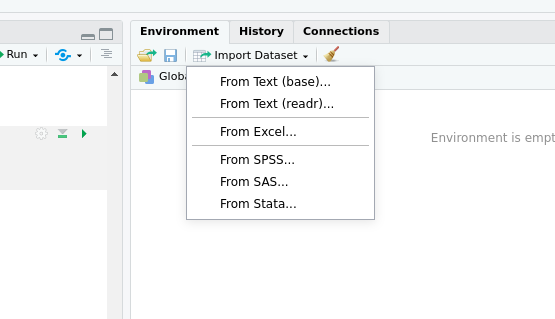

Aggregation und Filemanagement
Aggregation
Aggregation über mehrere Spalten
Beispiel aus der letzten Sitzung:
test <- read_csv("data/test.csv")
test %>%
group_by(group) %>%
summarise(m_t1 = mean(points_t1),
sd_t1 = sd(points_t1),
m_t2 = mean(points_t2),
sd_t2 = sd(points_t2))## # A tibble: 3 × 5
## group m_t1 sd_t1 m_t2 sd_t2
## <dbl> <dbl> <dbl> <dbl> <dbl>
## 1 1 3.8 0.889 4.3 1.32
## 2 2 3.52 0.576 5.18 0.873
## 3 3 4.45 0.354 5.4 0.566across-Funktion
Statt die Spalten auf denen wir Operationen durchführen wollen alle einzeln auszuwählen, können wir mit der across-Funktion auch eine Stapelweise Operation anstoßen.
Dazu benutzen wir die select-helper, die wir schon kennen:
test %>%
select(contains('points'))## # A tibble: 10 × 2
## points_t1 points_t2
## <dbl> <dbl>
## 1 4.8 2.8
## 2 3.2 5.8
## 3 3.5 4.8
## 4 3.1 5.3
## 5 4.2 5.8
## 6 4.7 5
## 7 3.4 4.7
## 8 2.8 6.2
## 9 4.2 4
## 10 4 5.2Diese praktischen Tools können wir jetzt mit der across-Funktion in unsere summarise-pipeline integrieren:
test %>%
group_by(group) %>%
summarise(across(contains('points'),
.fns = mean,
.names = 'm_{.col}'),
across(contains('points'),
.fns = sd,
.names = 'sd_{.col}'))## # A tibble: 3 × 7
## group m_points_t1 m_points_t2 sd_points_t1
## <dbl> <dbl> <dbl> <dbl>
## 1 1 3.8 4.3 0.889
## 2 2 3.52 5.18 0.576
## 3 3 4.45 5.4 0.354
## sd_points_t2 sd_m_points_t1 sd_m_points_t2
## <dbl> <dbl> <dbl>
## 1 1.32 NA NA
## 2 0.873 NA NA
## 3 0.566 NA NAFrage
## # A tibble: 3 × 7
## group m_points_t1 m_points_t2 sd_points_t1
## <dbl> <dbl> <dbl> <dbl>
## 1 1 3.8 4.3 0.889
## 2 2 3.52 5.18 0.576
## 3 3 4.45 5.4 0.354
## sd_points_t2 sd_m_points_t1 sd_m_points_t2
## <dbl> <dbl> <dbl>
## 1 1.32 NA NA
## 2 0.873 NA NA
## 3 0.566 NA NAWarum sind da zwei leere Spalten?
- Weil wir was falsch gemacht haben.
- Weil auch die Streuungen der Mittelwerte berechnet wurde, also von jeweils einem Wert, was nicht geht.
- Das ist das Ergebnis der Standardisierung der Streuungen am N, da das N hier 0 ist, wird durch 0 geteilt und es kommt nix raus.
lazy evaluation
Die tidyverse-Funktionen folgen dem Prinzip der ‘lazy evaluation,’ das heißt ein Argument wird nach dem anderen ausgeführt.
Wenn wir also im ersten Argument Spalten erstellen, die zusätzlich zum ursprünglichen Datensatz von contains betroffen werden, werden die folgenden Funktionen auch auf diese angewandt. Um das zu verhindern, können wir das .fn-Argument erweitern und im .names- Argument einen weiteren Platzhalter verwenden:
test %>%
group_by(group) %>%
summarise(across(contains('points'),
.fns = list(mean = mean,
sd = sd),
.names = '{.fn}_{.col}'))## # A tibble: 3 × 5
## group mean_points_t1 sd_points_t1 mean_points_t2
## <dbl> <dbl> <dbl> <dbl>
## 1 1 3.8 0.889 4.3
## 2 2 3.52 0.576 5.18
## 3 3 4.45 0.354 5.4
## sd_points_t2
## <dbl>
## 1 1.32
## 2 0.873
## 3 0.566Die lazy evaluation ist ein feature, das wir zum Beispiel dazu benutzen können, Zwischenergebnisse zu benutzen.
Da die summarise-Argumente Schritt für Schritt ausgeführt werden, funktioniert der folgende Code:
test %>%
group_by(group) %>%
summarise(n = n(),
sd = sd(points_t1),
sem = sd / sqrt(n))## # A tibble: 3 × 4
## group n sd sem
## <dbl> <int> <dbl> <dbl>
## 1 1 3 0.889 0.513
## 2 2 5 0.576 0.258
## 3 3 2 0.354 0.25Mit aggregierten Daten weiterarbeiten
Um die Ergebnisse einer nach einer groupierten summarise-Funktion für weitere Manipulationen zu verwenden, müssen wir noch ein ungroup in die pipe einfügen, um R mitzuteilen dass die folgenden Operationen wieder Datensatz-übergreifend gedacht sind. So können wir zum Beispiel aus absoluten relative Häufigkeiten errechnen.
test %>%
group_by(group) %>%
count() %>%
ungroup() %>%
mutate(rel_n = n/sum(n))## # A tibble: 3 × 3
## group n rel_n
## <dbl> <int> <dbl>
## 1 1 3 0.3
## 2 2 5 0.5
## 3 3 2 0.2Daten einlesen II und zusammenfügen
Daten aus Textfiles
Daten aus Textfiles lassen sich am Einfachsten (wie letzte Sitzung auch schon kurz gezeigt) über die RStudio-IDE einlesen.
Dazu einfach auf das ‘Import Dataset’- Menü über dem Environment klicken und ‘From Text (readr)…’ auswählen:



Der mit der grafischen Oberfläche erstellte Code lässt sich dann einfach in’s R-Skript kopieren:
test <- read_csv("data/test.csv")
test2 <- read_delim("data/test2.txt",
"\t",
escape_double = FALSE,
trim_ws = TRUE)
stadtteile <- read_delim("data/test3.csv",
";",
escape_double = FALSE,
locale = locale(decimal_mark = ",",
encoding = "ISO-8859-2",
asciify = TRUE),
trim_ws = TRUE)
glimpse(stadtteile)## Rows: 30
## Columns: 6
## $ Land <chr> "de-sh", "de-sh", "de-sh", "de-sh"…
## $ Stadt <chr> "Kiel", "Kiel", "Kiel", "Kiel", "K…
## $ Kategorie <chr> "geo", "geo", "geo", "geo", "geo",…
## $ Merkmal <chr> "Flächen in Hektar", "Flächen in H…
## $ Stadtteil <chr> "Altstadt", "Vorstadt", "Exerzierp…
## $ Hektar <dbl> 35.0983, 45.8515, 42.0120, 45.1336…Daten aus Excel-Dateien
Daten aus Excel-Dateien lassen sich ganz ähnlich einlesen, nur dass wir statt ‘From Text (readr)…’ nun ‘From Excel…’ auswählen.

library(readxl)
kiel_haushalte <- read_excel("data/kiel.xlsx", sheet = "Haushalte")
glimpse(kiel_haushalte)## Rows: 30
## Columns: 7
## $ Stadtteile <chr> "Altstadt", "…
## $ Einpersonen <dbl> 384, 657, 321…
## $ `Paar ohne Kind` <dbl> 305, 303, 143…
## $ `Paar mit Kindern` <dbl> 165, 167, 921…
## $ `Paar mit Nachkommen` <dbl> 29, 13, 56, 4…
## $ Alleinerziehende <dbl> 28, 34, 215, …
## $ `Sonst. Mehrpersonenhaushalte` <dbl> 118, 110, 444…Kombinieren von Datensätzen
Das tidyverse bietet eine sehr praktische Familie von Funktionen, um Datensätze zusammenzufügen, die join-Funktionen.
Wir werden hier erstmal nur eine davon benutzen, die left_join-Funktion. Sie nimmt zwei Datensätze als Argumente, gerne auch den ersten als Ergebnis einer pipeline, und fügt diese anhand einer im by-Argument angegebenen Spalte zusammen.
Wir wollen mal die Datensätze zu den Haushalten und der Fläche der Kieler Stadtteile zusammenfügen:
df <- stadtteile %>%
left_join(kiel_haushalte,by = c('Stadtteil' = 'Stadtteile'))
glimpse(df)## Rows: 30
## Columns: 12
## $ Land <chr> "de-sh", "de-…
## $ Stadt <chr> "Kiel", "Kiel…
## $ Kategorie <chr> "geo", "geo",…
## $ Merkmal <chr> "Flächen in H…
## $ Stadtteil <chr> "Altstadt", "…
## $ Hektar <dbl> 35.0983, 45.8…
## $ Einpersonen <dbl> 384, 657, 321…
## $ `Paar ohne Kind` <dbl> 305, 303, 143…
## $ `Paar mit Kindern` <dbl> 165, 167, 921…
## $ `Paar mit Nachkommen` <dbl> 29, 13, 56, 4…
## $ Alleinerziehende <dbl> 28, 34, 215, …
## $ `Sonst. Mehrpersonenhaushalte` <dbl> 118, 110, 444…Das sieht ja sehr nett aus, wir können den zusammengefügten Datensatz nun benutzen, um eine Korrelationsmatrix für alle numerischen Spalten zu erstellen:
df %>%
select(where(is.numeric)) %>%
cor() | Hektar | Einpersonen | Paar ohne Kind | Paar mit Kindern | Paar mit Nachkommen | Alleinerziehende | Sonst. Mehrpersonenhaushalte | |
|---|---|---|---|---|---|---|---|
| Hektar | 1.000 | -0.029 | 0.364 | 0.314 | 0.445 | 0.199 | 0.204 |
| Einpersonen | -0.029 | 1.000 | 0.766 | 0.565 | 0.426 | 0.617 | 0.750 |
| Paar ohne Kind | 0.364 | 0.766 | 1.000 | 0.822 | 0.814 | 0.739 | 0.853 |
| Paar mit Kindern | 0.314 | 0.565 | 0.822 | 1.000 | 0.950 | 0.932 | 0.933 |
| Paar mit Nachkommen | 0.445 | 0.426 | 0.814 | 0.950 | 1.000 | 0.880 | 0.877 |
| Alleinerziehende | 0.199 | 0.617 | 0.739 | 0.932 | 0.880 | 1.000 | 0.968 |
| Sonst. Mehrpersonenhaushalte | 0.204 | 0.750 | 0.853 | 0.933 | 0.877 | 0.968 | 1.000 |
Exportieren von Datensätzen in csv-Format
Um diesen Datensatz jetzt wieder zu exportieren, können wir uns eins von den schon beim Einlesen kennengelernten Formaten aussuchen. Hier können wir dann aber leider nicht so einfach die GUI benutzen, wenn wir nicht ein .RData-File erstellen wollen (was wir dieses Semester nicht tun).
Um in csv-Dateien zu exportieren, können wir einfach die write_csv-Funktion aus dem tidyverse verwenden. Sie nimmt wieder einen Datensatz als erstes Argument (pipeline!) und dazu einen Pfad, in den wir unser Ergebnis abspeichern wollen. Wir versuchen mal unsere Korrelationstabelle von eben abzuspeichern. Dabei müssen wir aber darauf achten, dass wir aus der Tabelle ein tibble und am Besten noch die Zeilennamen zu einer Spalte machen, damit diese erhalten bleiben:
correlations <-
df %>%
select(where(is.numeric)) %>%
cor() %>%
as_tibble(rownames = 'Masseinheit')
correlations %>%
write_csv('data/correlations.csv')Exportieren von Datensätzen in Excel-Format
Manchmal ist es aber praktischer (vor allem wenn man einen Bericht in MS Office erstellt), die Ergebnisse als .xlsx zu exportieren.
Das ist leider nicht mit dem readxl-Paket möglich. Dafür benötigen wir das openxlsx-Paket, das natürlich zuerst mit install.packages installiert werden muss.
Mit den Funktionen createWorkbook und addWorksheet können wir ein Excel-Dokument und Tabellen in diesem anlegen, die wir dann mit writeData füllen und mit saveWorkbook abspeichern können.
library(openxlsx)
excel_output <- createWorkbook()
addWorksheet(excel_output, 'correlations')
writeData(excel_output, 'correlations', correlations)
addWorksheet(excel_output, 'original_data')
writeData(excel_output, 'original_data', df)
saveWorkbook(excel_output,'data/output.xlsx',overwrite = T)